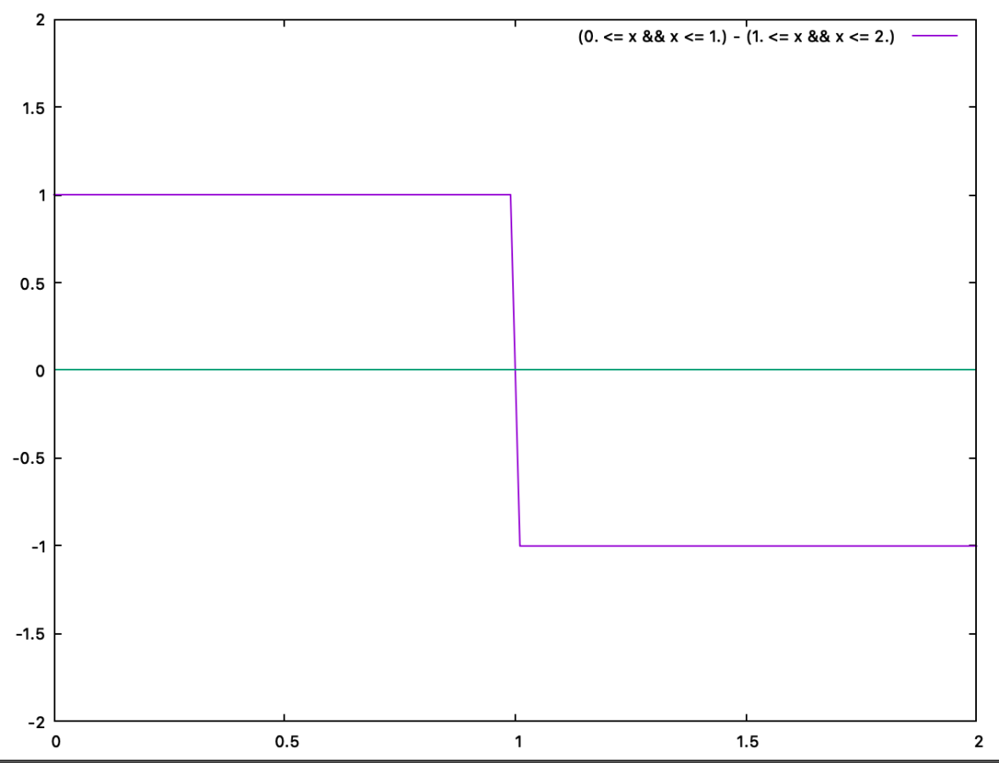
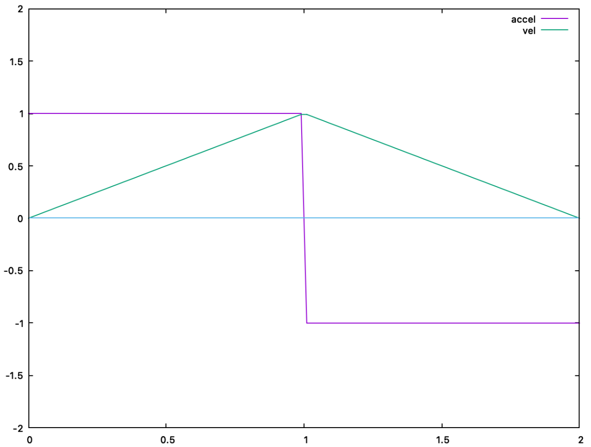
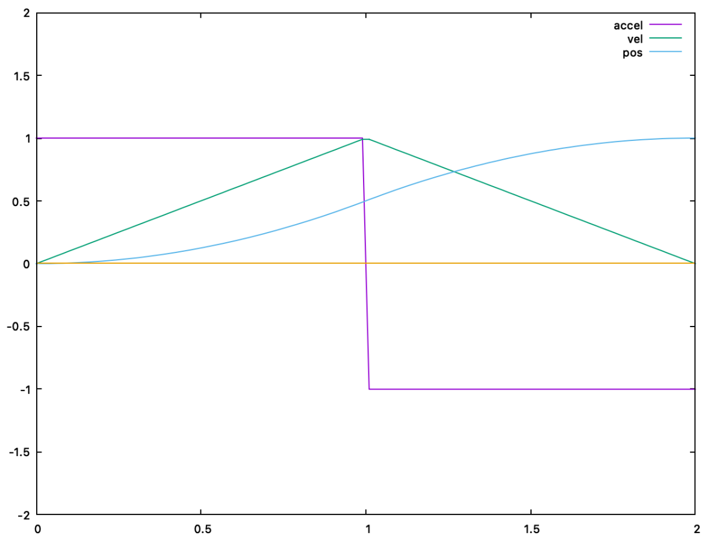
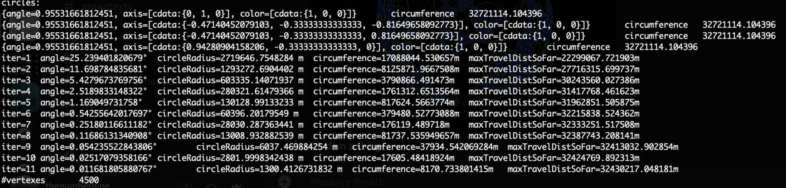

In terms of theortical planet-wide transportation megastructures I offer a new intermediate option between space elevators and dyson spheres.
A space elevator, based off equatorial anchors, is 1-dimensional in their design / transportation capabilities.
A dyson sphere, which would cover an entire stars / spherical-surface, is 2-dimensional in their design.
I suggest a transportation network based on fractal-distributed nested circles.
The design is be based on Descartes' circle theorem
/ problem of Apollonius
/ apollonian gasket applied to the surface of a sphere.
This will span Hausdorff dimensions from 1 to 2, and can be progressively built to address transport to specific locations on the planet according to population density and transit priority.
The rings would serve as a train track, the train could be powered by the rotation of the planet, either by electromagnetic capturing of energy funneled into the poles, or by space-elevator anchors.
An initial set of circles could be chosen based on a platonic solid. I propose to start with a tetrahedron circle grid where the base circle side of the tetrahedron lies in the northern hemisphere. This would better accomodate the fact that most the land mass and population of Earth is in the northern hemisphere.
Tetrahedron-base in the north pole, parallel to the equator, in equirectangular chart.
If the 1st largest circle grid layer is a tetrahedron over all the earth, then by the 12th nesting the circles are only 1.3 kilometers in radius. This should be easy walking distance.
The maximum required distance to travel if you are jumping from circle to circle up the grid is 32,430 km. This is 3/4'ths the circumference of the earth, so the longest possible distance to anywhere on Earth is on par with the same distance as a direct flight there.
Alternatively, choosing a equatorial-bisecting great-arc would be useful in starting the construction based on a space-elevator, however this would not be optimal for Earth as most the land is in the northern hemisphere of the planet.
A single branch of the iterated-function-set of the apollonion-gasket applied to a sphere surface.
The initial circle configuration fits the sides of a tetrahedron.
A single branch overlaid on the Earth, with the tetrahedron-base in the north pole, parallel to the equator.
The single branch applied to Earth, in various geographic transformations.
Never mind the line-segments wrapping around the edges, this is fixed with geometry shaders in the renderer of my earthquake shear lines project.
A single iterated-function-set (IFS) branch on the Earth, initialized with a tetrahedron whose base is in the north hemisphere, with azimuthal-equidistant centered at the north pole (flat-earth view).
Azimuthal-equidistant with 3 iterations of transportation-network circle-nesting shown.
Mollweide with 3 iterations of transportation-network circle-nesting shown.
Sphere display with 3 iterations of transportation-network circle-nesting shown.
Equirectangular with 3 iterations of transportation-network circle-nesting shown.

Acceleration as a Heaviside-step function.

Velocity as a linear function.

Position as a quadratic function.
The previous position, velocity, and acceleration functions are plotted as follows:
gnuplot> plot [0:2][-2:2] (0. <= x && x <= 1.) - (1. <= x && x <= 2.) title 'accel',\
(0. <= x && x <= 1.) * x + (1. <= x && x <= 2.) * (2. - x) title 'vel',\
(0. <= x && x <= 1.) * .5 * x**2 + (1. <= x && x <= 2.) * (1. - .5 * (x - 2.)**2) title 'pos',\
0 notitle

The total distance traveled across portions of successive distances would maximally be calculated as the previous figure shows.
The math is straightforward:
a(t) = { a for x < dist/2, -a for x > dist/2, 0 for x > dist }
for the first half of the travel:
a(t) = a ... is constant
v(t) = ∫ a(t) dt = ∫ a dt = a ∙ t
x(t) = ∫ v(t) dt = ∫ a ∙ t dt = 1/2 ∙ a ∙ t^2
x_mid = 1/2 ∙ a ∙ t_mid^2
t_mid = √(2 ∙ x_mid / a)
and then ofc t_final = t_mid ∙ 2 = 2 ∙ √(2 ∙ x_mid / a)
t_final = √( x_final / a)
for our maximal distance i got ... x_final = 32430217.048181 m
let's look at various t_final's (in seconds) for varying acceleration (in m/s^2)
gnuplot> x_final = 32430217.048181
gnuplot> set xlabel "acceleration (m/s^2)"
gnuplot> set ylabel "time (s)"
gnuplot> plot [0:50] sqrt(x_final / x) title 't_{final}'
Time (seconds) vs acceleration (m/s^2).
Time (minutes) vs acceleration (m/s^2).
Time (hours) vs acceleration (G).
Time (hours) vs acceleration (G), in log-log scale
Each circle would facilitate transportation at a speed proportional to its size.
In transitioning from circle to circle of various sizes, you would need to accelerate.
The acceleration could be chosen to either minimize travel time or maximize comfort.
The previous figure shows the possible exchanges of acceleration in G-forces versus time taken to travel a maximal distance between any two points, in hours.
As you can see, a 0.1-G-force acceleration trip to any point on Earth would take less than 3 hours.
Alternative to the tetrahedron base being in the north hemisphere aligned parallel to the equator, it could also be positioned in the south hemisphere parallel to the equator.
This could allow for fast transport to take place far from populated areas, while slower higher-IFS-iteration could take place in the northern hemisphere.
A downside to this is the amount of construction required to take place over the ocean.